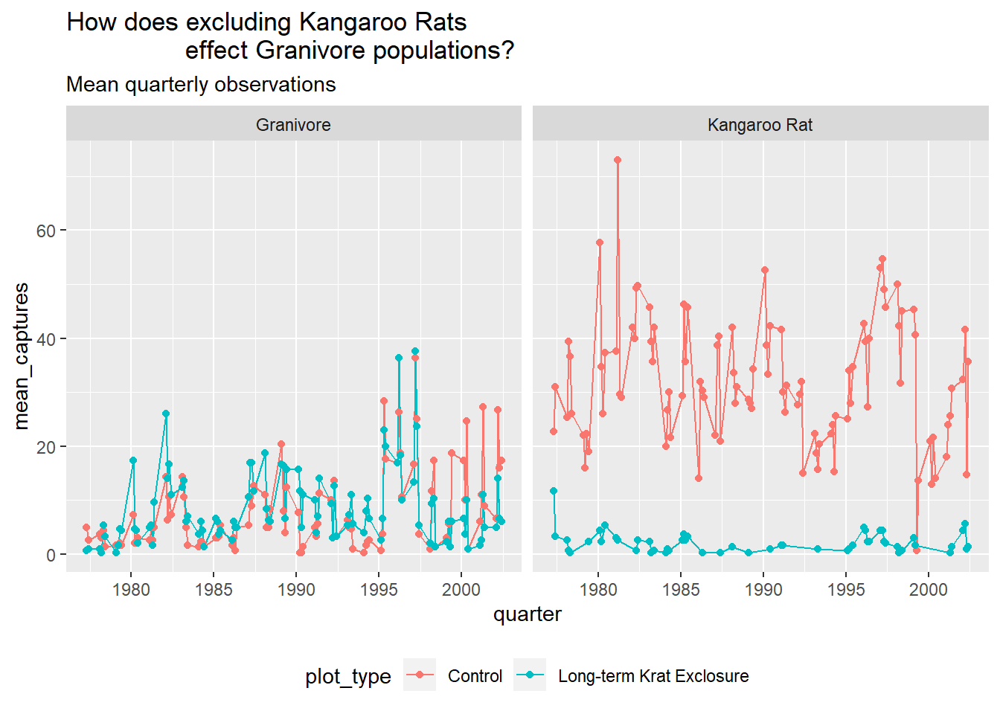

2 Data wrangling I
By the end of this chapter you will:
- have learnt to load csv files
- have used the key verbs of the
dplyrpackage for transforming data to arrange and filter observations, select variables, create new variables, and create summaries. - have learnt how to combine functions with the pipe
%>%from themagrittrpackage to combine tasks
The following sections are based upon the data transformation chapter in R4DS and the Data Carpentry ecology lesson.
2.1 Data organisation in spreadsheets
Karl Broman and Kara Woo wrote as paper all about Data Organization in Spreadsheets.
It’s full of practical advice and context and well worth reading for helping you think about best practices for organising your data for yourself, and when working with others.
2.1.1 Flat formats and Excel files
File formats like .csv and .tsv, comma separated variables and tab separated variables
respectively are plain text files. That is to
say they contain only the data, as text information, and are the simplest and most
convenient way to share data as most software can read and
interpret them.
Excel files saves files into its own proprietary format .xls or .xlsx that holds
information in addition to the data itself. For reading and
writing excel files in R, the tidyverse readxl package is very useful.
2.2 The Portal Project data
In this chapter we are going to focus on data from the Portal Project, which is a long running survey of rodents and other species in the Chihuahuan Desert, as analysed in the 1994 paper by Heske et. al:
Long-Term Experimental Study of a Chihuahuan Desert Rodent Community: 13 Years of Competition, DOI: 10.2307/1939547.
Specifically they explored the effect on the populations of small seed eating rodents as a result of the exclusion of larger competitor kangaroo rats over a period from 1977 to 1991.
We’ll also use some of their data to explore this question: What is the effect of the exclusion of kangaroo rats from a plot of land on the granivore population?
Figure 2.1 shows an image of one of the species of kangaroo rats excluded during the study.

Figure 2.1: Merriam’s kangaroo rat, Dipodomys merriami
Figure 2.2 indicates how the exclusion works, where a for number of fenced plots the kangaroo rats were either able to enter by a hole or kept out.
Figure 2.2: Kangaroo Rat exclusion
The plots are 50 metres by 50 metres, and a survey of the species within each plot has been ongoing once a month for many years.
The dataset is stored as a comma separated value (CSV) file. Each row holds information for a single animal, and the columns represent:
| Column | Description | Type |
|---|---|---|
| record_id | Unique id for the observation | numeric |
| month | month of observation | numeric |
| day | day of observation | numeric |
| year | year of observation | numeric |
| plot_id | ID of a particular plot | numeric |
| species_id | 2-letter code | character |
| sex | sex of animal (“M”, “F”) | character |
| hindfoot_length | length of the hindfoot in mm | numeric |
| weight | weight of the animal in grams | numeric |
| genus | genus of animal | character |
| species | species of animal | character |
| taxa | e.g. Rodent, Reptile, Bird, Rabbit | character |
| plot_type | type of plot | character |
The rodents species surveyed are:
Kangaroo Rats
| species_id | Scientific name | Common name |
|---|---|---|
| DM | Dipodomys merriami | Merriam’s kangaroo rat |
| DO | Dipodomys ordii | Ord’s kangaroo rat |
| DS | Dipodomys spectabilis | Banner-tailed kangaroo rat |
Granivores
| species_id | Scientific name | Common name |
|---|---|---|
| PP | Chaetodipus penicillatus | Desert pocket mouse |
| PF | Perognathus flavus | Silky pocket mouse |
| PE | Peromyscus eremicus | Cactus mouse |
| PM | Peromyscus maniculatus | Deer Mouse |
| RM | Reithrodontomys megalotis | Western harvest mouse |
2.2.1 Downloading and importing the data
First create a R project for this analysis e.g coding-together-week-2
The dataset is stored on-line, so we use the utility function
download.file() to download the csv file to our data folder.
(Did you create a data folder in the project directory?)
Here we pass the url = and destfile = arguments to download.file().
As we have the tidyverse packages we can use the readr package it contains,
which has many functions for reading files, including read_csv().
The advantage of read_csv() over base R read.csv() is that it defaults to reading strings as
character vectors rather than factors (categorical variables) which
is usually what we want.
As we read the data into our environment we need to assign a label
to the object we are creating. Here we assign the dataset to an object
called surveys using the <- assignment operator.
2.3 dplyr
dplyr “is a grammar of data manipulation”.
Concretely, it’s a package of functions from the tidyverse that have been
created for tasks that require manipulation of data stored in data frames.
](img/dplyr-name-github.png)
Figure 2.3: Why is it called dplyr?
We’re going to use the most common verbs in dplyr to examine the Portal Project
surveys data.
2.3.1 Filter rows with filter()
The first verb to consider is the filter() function which enables us to subset observations
based on their value.
Consider the surveys data and sub-setting observations that only occurred from
1985 onwards. It’s fairly natural to say “filter the survey where the year
variable is equal or greater than 1985”. And indeed this is how we use filter()
as a verb.
Figure 2.4 shows how we give the filter function two arguments. The first is the data frame, the second is the variable and condition on which we wish to filter.
An alternative way to use filter() is to “pipe” the function using pipe %>% from the magrittr package
which you can think of as using the word “then”. We take our data set then filter it.
Using the pipe makes more sense when combining several operations.
Ctl+Shift+M is a keyboard short cut to create a pipe.
For the filter itself, from R4DS:
“To use filtering effectively, you have to know how to select the observations t
hat you want using the comparison operators. R provides the standard suite: >,
>=, <, <=, != (not equal), and == (equal)….For other types of combinations,
you’ll need to use Boolean operators yourself: & is “and”, | is “or”, and ! is “not”."
See Figure 5.1 in R4DS for to see how these operators work.
(Note that we aren’t assigning the output to an object here, so we can see it.)

Figure 2.4: dplyr::filter()
## # A tibble: 25,290 x 13
## record_id month day year plot_id species_id sex hindfoot_length
## <dbl> <dbl> <dbl> <dbl> <dbl> <chr> <chr> <dbl>
## 1 10606 7 24 1985 2 NL F 30
## 2 10617 7 24 1985 2 NL M 32
## 3 10627 7 24 1985 2 NL F 32
## 4 10720 8 20 1985 2 NL F 31
## 5 10923 10 13 1985 2 NL F 31
## 6 10949 10 13 1985 2 NL F 33
## 7 11215 12 8 1985 2 NL F 32
## 8 11329 3 9 1986 2 NL M 34
## 9 11496 5 11 1986 2 NL F 31
## 10 11498 5 11 1986 2 NL F 31
## # ... with 25,280 more rows, and 5 more variables: weight <dbl>,
## # genus <chr>, species <chr>, taxa <chr>, plot_type <chr>An example using Boolean logic, would be to use the “or” operator | to filter
for the observations only occurring on plot_type’s control or long term kangaroo
rat exclusion. This time we assign the output to a new data frame called surveys_filtered.
Note: as plot_type is a character vector we put the terms in quotes,
and also the double equals sign == “for equal to”.
# Keep only the rows corresponding with the Control and Long-term Krat Exclosure
surveys_filtered <- surveys %>%
filter(plot_type == "Control" | plot_type == "Long-term Krat Exclosure")Note: filter() only includes rows where the condition is TRUE; it excludes both FALSE and missing NA values.
We have to explicitly ask to keep NA values using is.na() as an additional filter.
How did I know which
plot_type’s to filter? I used thedplyr::distinct()function, passing thesurveysdata frame and theplot_typevariable to obtain a list of the unique plot types, from which I determined theControlandLong-term Krat Exclosureplots were the ones I was after. Note that you need to add the argument.keep_all = TRUEtodistinct()to return all the columns in the data frame
## # A tibble: 5 x 1
## plot_type
## <chr>
## 1 Control
## 2 Long-term Krat Exclosure
## 3 Short-term Krat Exclosure
## 4 Rodent Exclosure
## 5 Spectab exclosure2.3.2 Arrange rows with arrange()
The next verb is arrange() which also operates on the rows, and enables
you to arrange the observations in a data frame according to one or more variables.
As with filter() we supply the variable or variables of interest as the arguments
to arrange().
From R4DS:
“If you provide more than one column name, each additional column will be used to break ties in the values of preceding columns… Missing values are always sorted at the end.”
Figure 2.5 shows how to arrange the observations according to the record_id
variable.

Figure 2.5: dplyr::arrange()
## # A tibble: 34,786 x 13
## record_id month day year plot_id species_id sex hindfoot_length
## <dbl> <dbl> <dbl> <dbl> <dbl> <chr> <chr> <dbl>
## 1 1 7 16 1977 2 NL M 32
## 2 2 7 16 1977 3 NL M 33
## 3 3 7 16 1977 2 DM F 37
## 4 4 7 16 1977 7 DM M 36
## 5 5 7 16 1977 3 DM M 35
## 6 6 7 16 1977 1 PF M 14
## 7 7 7 16 1977 2 PE F NA
## 8 8 7 16 1977 1 DM M 37
## 9 9 7 16 1977 1 DM F 34
## 10 10 7 16 1977 6 PF F 20
## # ... with 34,776 more rows, and 5 more variables: weight <dbl>,
## # genus <chr>, species <chr>, taxa <chr>, plot_type <chr>Or we could use arrange() to find the record with the shortest hindfoot.
Note: arrange() defaults to ascending order.
## # A tibble: 34,786 x 13
## record_id month day year plot_id species_id sex hindfoot_length
## <dbl> <dbl> <dbl> <dbl> <dbl> <chr> <chr> <dbl>
## 1 31400 9 30 2000 19 PB M 2
## 2 10067 3 16 1985 19 RM M 6
## 3 19567 1 8 1992 19 BA M 6
## 4 19015 9 9 1991 19 BA F 7
## 5 21036 8 19 1993 21 PF F 7
## 6 31457 9 31 2000 6 RM M 8
## 7 19191 10 11 1991 13 PF F 8
## 8 5801 4 29 1982 7 RM <NA> 8
## 9 33647 3 14 2002 3 PF M 9
## 10 20562 12 22 1992 5 RM F 9
## # ... with 34,776 more rows, and 5 more variables: weight <dbl>,
## # genus <chr>, species <chr>, taxa <chr>, plot_type <chr>To find the Cactus Mouse, (species_id == "PE") with the longest hindfoot we combine
filter() with arrangee() using the pipe:
Hint Use the desc() function to arrange from biggest to smallest.
## # A tibble: 1,299 x 13
## record_id month day year plot_id species_id sex hindfoot_length
## <dbl> <dbl> <dbl> <dbl> <dbl> <chr> <chr> <dbl>
## 1 1202 9 3 1978 7 PE F 30
## 2 517 1 8 1978 2 PE M 26
## 3 32443 8 25 2001 23 PE F 24
## 4 5080 12 30 1981 15 PE F 23
## 5 5090 12 30 1981 15 PE F 23
## 6 33700 3 14 2002 9 PE F 23
## 7 604 2 18 1978 2 PE M 22
## 8 12459 3 2 1987 2 PE F 22
## 9 13992 1 24 1988 2 PE M 22
## 10 14516 5 15 1988 2 PE F 22
## # ... with 1,289 more rows, and 5 more variables: weight <dbl>,
## # genus <chr>, species <chr>, taxa <chr>, plot_type <chr>2.3.3 Select columns with select()
Often your data contains variables you don’t need for the analysis you are performing, or you want to subset them to share with others.
To select only the ones you need, or explore subsets of the variables, the
select() verb enables you to keep only the columns of interest.
Figure 2.6 shows the use of select() to choose only
the year and plot_type columns, with or without the pipe.
Selecting the variables contained in the columns can be done in various ways.
For example, by the column number, the variable name or by range.
Check the help function ?select for more options.

Figure 2.6: dplyr::select()
## # A tibble: 34,786 x 2
## year plot_type
## <dbl> <chr>
## 1 1977 Control
## 2 1977 Control
## 3 1977 Control
## 4 1977 Control
## 5 1977 Control
## 6 1977 Control
## 7 1977 Control
## 8 1978 Control
## 9 1978 Control
## 10 1978 Control
## # ... with 34,776 more rowsWe can also use negative selection by adding a minus sign - to variables we
wish to discard. Here we discard sex,hindfoot_length and weight from the
surveys_filtered object and keep everything else:
# Select everything except sex, hindfoot and weight
surveys_filtered %>% select(-sex,-hindfoot_length,-weight)## # A tibble: 20,729 x 10
## record_id month day year plot_id species_id genus species taxa
## <dbl> <dbl> <dbl> <dbl> <dbl> <chr> <chr> <chr> <chr>
## 1 1 7 16 1977 2 NL Neot~ albigu~ Rode~
## 2 72 8 19 1977 2 NL Neot~ albigu~ Rode~
## 3 224 9 13 1977 2 NL Neot~ albigu~ Rode~
## 4 266 10 16 1977 2 NL Neot~ albigu~ Rode~
## 5 349 11 12 1977 2 NL Neot~ albigu~ Rode~
## 6 363 11 12 1977 2 NL Neot~ albigu~ Rode~
## 7 435 12 10 1977 2 NL Neot~ albigu~ Rode~
## 8 506 1 8 1978 2 NL Neot~ albigu~ Rode~
## 9 588 2 18 1978 2 NL Neot~ albigu~ Rode~
## 10 661 3 11 1978 2 NL Neot~ albigu~ Rode~
## # ... with 20,719 more rows, and 1 more variable: plot_type <chr>2.3.4 Create new variables with mutate()
Another common task is to create a new variable or variables, often from existing data
within the data frame. For this we use the mutate() verb. It follows the
same syntax as for filter(), arrange() and select() in that the first
argument is the dataset, and the subsequent arguments are the new variables we wish
to create.
Figure 2.7 shows how to create a new variable weight_kg by
dividing the existing weight variable in grams by 1000.

Figure 2.7: dplyr::mutate()
A more complicated mutation, and key to to our analysis exploring the question as to whether Kangaroo rats effect the size of the granivore population would be to create a variable that indicates which type of rodent an observation is recording.
To do this we can make use of another dplyr function called case_when().
This allows us to pass different values to our new rodent_type variable if
they match either species_id values corresponding with Kangaroo rats or Granivores.
To remind us, the rodents species surveyed are:
Kangaroo Rats
| species_id | Scientific name | Common name |
|---|---|---|
| DM | Dipodomys merriami | Merriam’s kangaroo rat |
| DO | Dipodomys ordii | Ord’s kangaroo rat |
| DS | Dipodomys spectabilis | Banner-tailed kangaroo rat |
Granivores
| species_id | Scientific name | Common name |
|---|---|---|
| PP | Chaetodipus penicillatus | Desert pocket mouse |
| PF | Perognathus flavus | Silky pocket mouse |
| PE | Peromyscus eremicus | Cactus mouse |
| PM | Peromyscus maniculatus | Deer Mouse |
| RM | Reithrodontomys megalotis | Western harvest mouse |
The first argument to case_when() is the variable and value we want to match,
just like filter(), for example species_id == "DM", and then we use the tilde
operator ~ followed by the value we want give our new variable if a we match
this condition. Here we want our new variable rodent_type to be “Kangaroo Rat”.
We do this for every case we want to match. There are other species than rodents
in this data, and we have choice to either provide values for each one, ignore them
which will lead to the value NA for those rows or we can supply a single value
to the rest by giving the argument TRUE followed by the value. This means if
there are other values in species_id - if this is true - then give them all the
same value. Here we supply the value “Other” for the remaining species: TRUE ~ "Other".
Below is how this looks in practice and is assigned to a new surveys_mutated object.
# Mutate surveys_filtered
surveys_mutated <- surveys_filtered %>%
# Create rodent type variable for K-rats and Granivores.Everything else, Other.
mutate(rodent_type = case_when(
species_id == "DM" ~ "Kangaroo Rat",
species_id == "DO" ~ "Kangaroo Rat",
species_id == "DS" ~ "Kangaroo Rat",
species_id == "PP" ~ "Granivore",
species_id == "PF" ~ "Granivore",
species_id == "PE" ~ "Granivore",
species_id == "PM" ~ "Granivore",
species_id == "RM" ~ "Granivore",
TRUE ~ "Other"))
# Check output using distinct()
surveys_mutated %>% select(species_id,rodent_type) %>%
distinct(species_id, .keep_all = T)## # A tibble: 42 x 2
## species_id rodent_type
## <chr> <chr>
## 1 NL Other
## 2 DM Kangaroo Rat
## 3 PF Granivore
## 4 PE Granivore
## 5 DS Kangaroo Rat
## 6 PP Granivore
## 7 SH Other
## 8 OT Other
## 9 DO Kangaroo Rat
## 10 OX Other
## # ... with 32 more rows2.3.5 Grouped summaries with group_by() and summarise()
Finally we’ll look at the verb summarise() and it’s companion group_by().
summarise() collapses a data frame
into a single row. For example as shown in Figure 2.8, we
could use it to find the average weight
of all the animals surveyed in the original data frame using mean(). (Here the
na.rm = TRUE argument is given to remove missing values from the data,
otherwise R would return NA when trying to average.)

Figure 2.8: dplyr::summarise()
## # A tibble: 1 x 1
## mean_weight
## <dbl>
## 1 42.7However summarise() is most useful when paired with group_by()
which defines the variables upon which we operate upon.
Figure 2.9 shows how by grouping the observations according to the
sex and species_id variables, we can then calculate the mean_weight for
each of these groups.

Figure 2.9: dplyr::group_by()
Using group_by() with summarise() now returns a table with 92 rows instead of single row.
## # A tibble: 92 x 3
## # Groups: sex [3]
## sex species_id mean_weight
## <chr> <chr> <dbl>
## 1 F BA 9.16
## 2 F DM 41.6
## 3 F DO 48.5
## 4 F DS 118.
## 5 F NL 154.
## 6 F OL 31.1
## 7 F OT 24.8
## 8 F OX 21
## 9 F PB 30.2
## 10 F PE 22.8
## # ... with 82 more rows2.4 Using dpylr to explore the effect of Kangaroo Rat exclusion on Granivore populations
Let’s use what we’ve learnt so far to explore the effect of Kangaroo Rats on Granivore populations
for the entire time covered in the surveys dataset.
A line plot with time on the x-axis and number of rodents on the y-axis would be one way to visual this, comparing the observations between the control plots and the Kangaroo rat exclusion plots.
One way to do this is to:
filter()the observations for the control and exclusion plots.- Create a new
rodent_typevariable for Kangaroo Rats and Granivores. - Create a new variable for time from the existing
day,monthandyearvariables. - Group the data according to the
rodent_type,plot_typeour time variable, and usesummarise()to calculate the number of observations for each group.
2.4.1 Re-cap of filter() and mutate()
Let’s re-cap steps one and two:
# Keep only the rows corresponding with the Control and Long-term Krat Exclosure
surveys_filtered <- surveys %>%
filter(plot_type == "Control" | plot_type == "Long-term Krat Exclosure")
# Mutate surveys_filtered
surveys_mutated <- surveys_filtered %>%
# Create rodent type variable for K-rats and Granivores.Everything else, Other.
mutate(rodent_type = case_when(
species_id == "DM" ~ "Kangaroo Rat",
species_id == "DO" ~ "Kangaroo Rat",
species_id == "DS" ~ "Kangaroo Rat",
species_id == "PP" ~ "Granivore",
species_id == "PF" ~ "Granivore",
species_id == "PE" ~ "Granivore",
species_id == "PM" ~ "Granivore",
species_id == "RM" ~ "Granivore",
TRUE ~ "Other"))2.4.2 Use lubridate to create new time variables
Step three introduces the tidyverse lubridate package.
As the name suggests, this is a package for wrangling dates and times.
It would be clearer to plot the data on three month (quarterly) basis rather than plotting every date in the dataset, so we need to create a variable that contains the quarter in which the observation was made, for each observation.
From lubridate we will use the function make_date() in combination with mutate()
first to create a single column date variable from the day,month and year variables.
We then use this date variable to create another new variable containing a value for the
quarter of the year in which the observation was made quarter using the quarter() function.
We’ll assign this output to a new data frame called surveys_subset.
2.4.3 Group and summarise the data into quarterly observations
Step four is to group and summarise our quarterly observations.
We group by rodent_type, plot_type and
quarter variables. In other words we’ve grouped the data according to Kangaroo Rat or
Granivore, Control plot or Exclusion plot, and the quarter of the year in which
the observation occurred.
Then we can calculate the number of captures for each of these groups by
using summarise() to create a mean_captures variable which is equal to the number
of rows for that group using the n() function divided by 4 to calculate
the average over each quarter.
Note: n() is a dplyr function that returns the number of observations in the current group.
by_quarter <- surveys_subset %>%
group_by(rodent_type,plot_type,quarter) %>%
summarise(mean_captures = n()/4)
by_quarter## # A tibble: 567 x 4
## # Groups: rodent_type, plot_type [6]
## rodent_type plot_type quarter mean_captures
## <chr> <chr> <dbl> <dbl>
## 1 Granivore Control 1977. 3.75
## 2 Granivore Control 1977. 2
## 3 Granivore Control 1978. 2.75
## 4 Granivore Control 1978. 2.25
## 5 Granivore Control 1978. 3.25
## 6 Granivore Control 1978. 1
## 7 Granivore Control 1979. 1.25
## 8 Granivore Control 1979. 1.5
## 9 Granivore Control 1979. 1.25
## 10 Granivore Control 1980. 5.5
## # ... with 557 more rowsThese steps have taken us from a table of 34,786 observations to a table of 567 observations.
2.4.4 Create a plot with ggplot
Now we can create a line and point plot, using the by_quarter data as our first ggplot()
argument.
For the aesthetics we are plotting the time on the
x-axis using the quarter variable, and the quarterly mean_captures on the
y-axis, and we colour the data by rodent_type.
Then we create line and point geometric mappings, and split the plot into two
facets using facet_wrap according to plot_type.
ggplot(by_quarter,
aes(x=quarter,y=mean_captures,colour=rodent_type)) +
geom_line() +
geom_point() +
facet_wrap(~ plot_type)## Warning: Removed 2 rows containing missing values (geom_path).## Warning: Removed 5 rows containing missing values (geom_point).
But it would be more useful to only plot the Kangaroo Rats and Granivores data, so let’s filter out the other species. And move the legend to the bottom of the plot and add a title.
by_quarter %>%
filter(rodent_type != "Other") %>%
ggplot(aes(x=quarter,y=mean_captures,colour=rodent_type)) +
geom_line() +
geom_point() +
facet_wrap(~ plot_type) +
theme(legend.position = "bottom") +
ggtitle("How does excluding Kangaroo Rats
effect Granivore populations?",
subtitle = "Mean quarterly observations")## Warning: Removed 1 rows containing missing values (geom_path).## Warning: Removed 3 rows containing missing values (geom_point).
Challenge Can you do a similar analysis, but plotting the data only from 1980 to 2000 and by semester?